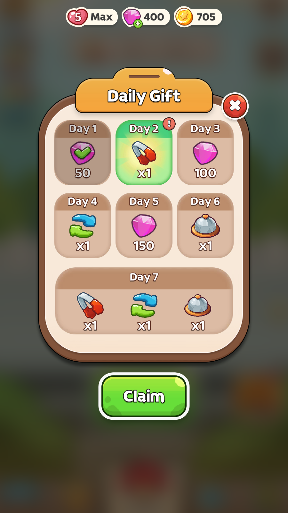
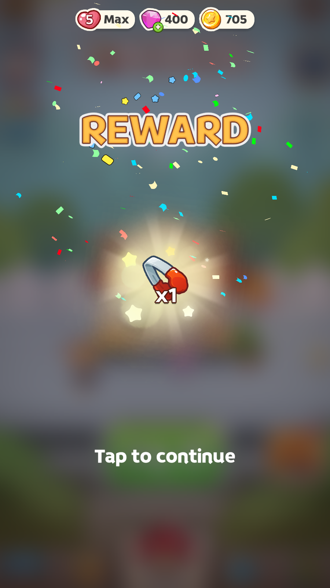
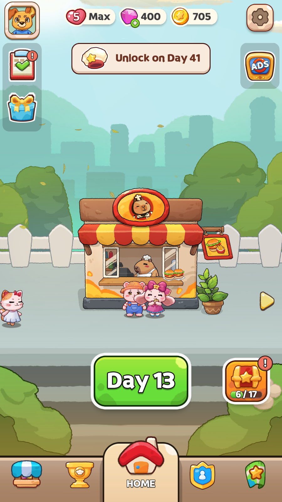

Quà đăng nhập 7 ngày (Daily Gift)
Mô tả
- Chuỗi quà 7 ngày, mỗi ngày dương lịch nhận 1 mục theo thứ tự, LiveOp
login7daystrongCakeOrder. - Ngày lẻ là gem (50 / 100 / 150), ngày chẵn là booster, ngày 7 là gói 3 booster (Magnet + Swap + Bell).
- Trên giao diện gọi là Daily Gift; tự bật khi vào Home nếu còn mục nhận được.
- Nhận xong mục ngày 7 thì cờ
login7Finished= 1 và chuỗi dừng hẳn. - Thấy và nhận thử trong phiên chơi 16/11 (Day 13, nhận ngày 2).
Thiết kế chi tiết
Tóm tắt thiết kế
- APK 7 ngày xen kẽ gem (ngày 1, 3, 5) và booster đơn (ngày 2, 4, 6), ngày 7 thưởng gói 3 booster: có lý do quay lại để thấy ngày 7.
- Code Nhận theo mask bit
TakeXDayRw: mỗi ngày dương lịch mở đúng 1 mục kế tiếp, không nhận dồn. - Code Có thể đổi bảng thưởng qua RC
login7day(validate chặt: ngày liên tục 1..N, trùng ngày thì từ chối), nhưng live 16/11 không dùng. - Playtest Day 13 đã nhận ngày 1 từ trước, nhận ngày 2 được Magnet x1; icon Home mất dấu (!) sau khi nhận.
- Nhận định Chuỗi chỉ chạy 1 vòng (
login7Finished), hợp với quà chào mừng người chơi mới hơn là thói quen vô hạn.
Luồng người chơi từng bước
- Vào HomeHệ thống Code
TryAutoShowPopupLogin7Daysbật popup nếu còn mục nhận được. - Xem 7 ngàyNgười chơi PlaytestNgày đã nhận có tick, ngày hiện tại sáng, các ngày sau mờ.

Daily Gift Day 13: ngày 1 đã nhận (tick), ngày 2 đang sáng, ngày 7 là 3 booster, nút Claim - NhậnNgười chơi PlaytestBấm Claim, popup REWARD hiện phần thưởng ngày đó.

Popup REWARD sau khi bấm Claim ngày 2: Magnet x1 - Quay lại HomeGiao diện PlaytestIcon quà hết dấu (!), chờ sang ngày dương lịch kế.

Home sau khi nhận: icon quà không còn dấu (!) - Ngày 7Hệ thống CodeNhận gói 3 booster,
login7Finished= 1, chuỗi kết thúc.


Bảng thưởng 7 ngày (prefab, APK)
| Ngày | Thưởng | Tên hiển thị trong game |
|---|---|---|
| 1 | 50 gem | Gem |
| 2 | 1 BoosterIngredientPick | Magnet |
| 3 | 100 gem | Gem |
| 4 | 1 BoosterShiftUpRow | Swap |
| 5 | 150 gem | Gem |
| 6 | 1 BoosterAutoCook | Bell |
| 7 | 1 IngredientPick + 1 ShiftUpRow + 1 AutoCook | Magnet + Swap + Bell |
Nguồn: LiveOpControl-Login7Days.prefab; tên hiển thị lấy từ ảnh Daily Gift Day 13 (RESULTS_LIVE.md).
Vận dụng cho game khác
- Gói 'ngày 7' lớn nhất làm mốc đích; xen gem / booster để mỗi ngày có phần thưởng khác nhau.
- Dùng mask bit + ngày nhận cuối thay vì chuỗi streak: bỏ lỡ một ngày không bị phạt, giảm cảm giác bị ép chơi.
- Bảng thưởng đọc từ RC nhưng validate chặt, cấu hình lỗi giữ bản cũ: an toàn khi live-ops sửa nhầm.
Bảng tổng hợp mọi tính năng đã làm chi tiết: FoodiePop_ThietKeChiTiet.xlsx.
Mở khóa & điểm vào
Không có mốc level trong LiveOpBehavior7DayLogin (Code). Playtest 16/11: icon quà xanh hiện ở Home từ Day 13. Điều kiện hiện icon / tự bật nằm ở HomeControllerCookOrder.TryAutoShowPopupLogin7Days (đọc NextRewardIndex và PlayerPrefs home_auto_shown_login_7days).
Điểm vào:
- Icon quà xanh bên trái Home (nhãn Daily Gift)
- Tự bật khi vào Home:
HomeControllerCookOrder.TryAutoShowPopupLogin7Days
Cách hoạt động
LiveOpBehavior7DayLogin.Initializeđọc RClogin7day(nếu hợp lệ) hoặc dùng bảng 7 ngày trong prefab.- Mỗi lần kiểm tra,
RefreshCycleso ngày hiện tại vớiLastClaimXDayRw;NextRewardIndexlấy bit đầu tiên chưa nhận trong maskTakeXDayRw. - Vào Home, nếu còn mục nhận được và hôm nay chưa tự bật thì popup tự mở (
home_auto_shown_login_7days). - Người chơi bấm Claim:
TakeReward(i)rồiReceiveRewards(i)cộng gem / booster và hiện popup REWARD. - Mỗi ngày chỉ nhận 1 mục; muốn mục tiếp theo phải chờ sang ngày dương lịch kế.
- Mục cuối (ngày 7) đặt
login7Finished= 1.
Ảnh chụp
Bấm ảnh để phóng to, dùng phím ← → để chuyển ảnh. Nhãn màu cho biết nguồn bằng chứng của ảnh.
Phần thưởng
| Ngữ cảnh | Phần thưởng | Evidence |
|---|---|---|
| Ngày 1 / 3 / 5 | 50 / 100 / 150 gem | LiveOpBehavior7DayLogin.ReceiveRewards |
| Ngày 2 | Magnet x1 (BoosterIngredientPick) | LiveOpBehavior7DayLogin.ReceiveRewards |
| Ngày 4 | Swap x1 (BoosterShiftUpRow) | LiveOpBehavior7DayLogin.ReceiveRewards |
| Ngày 6 | Bell x1 (BoosterAutoCook) | LiveOpBehavior7DayLogin.ReceiveRewards |
| Ngày 7 | Magnet x1 + Swap x1 + Bell x1 | RewardMilestone.GetRewards |
Số liệu chính
| Chỉ số | Giá trị | Nguồn |
|---|---|---|
| Số ngày | 7 | LiveOpControl-Login7Days.prefab |
| Tổng gem cả chuỗi | 300 (50 + 100 + 150) | rewardMilestones |
| Tổng booster cả chuỗi | 6 (Magnet x2, Swap x2, Bell x2) | rewardMilestones |
| Nhịp nhận | 1 mục / ngày dương lịch | LiveOpsBehaviorLoginXDaysAbstract.IsNewDaySinceLastClaim |
Use case (8)
Bấm vào từng use case để mở. Mở/đóng tất cả
UC-01 Tự bật popup khi vào Home
Các bướcTryAutoShowPopupLogin7DaysđọcNextRewardIndex- Đọc / ghi PlayerPrefs
home_auto_shown_login_7days - Mở
UIPopup7DayLogin
| Actor | System |
|---|---|
| Trigger | Vào Home |
| Điều kiện | Còn mục nhận được; hôm nay chưa tự bật |
| Kết quả | Popup Daily Gift hiện sau khi vào Home |
| Quy tắc / số liệu | Cách so sánh giá trị home_auto_shown_login_7days chưa đọc kỹ (suy luận: lưu ngày đã bật) |
| Evidence | HomeControllerCookOrder.TryAutoShowPopupLogin7Days |
UC-02 Mở popup từ icon
Các bướcUIPopup7DayLogin.SetUpOnCreatedựng 7 ôUIItemLoginDayRewardtừRewardMilestone.GetRewardsRefreshAllItemStatesđặt trạng thái từng ngày: đã nhận / đang sáng / khoá- Ghi tracking
openvới modelogin_7d
| Actor | Player |
|---|---|
| Trigger | Bấm icon Daily Gift |
| Kết quả | Thấy 7 ngày, ngày hiện tại sáng, nút Claim |
| Quy tắc / số liệu | Ô có nhiều thưởng (ngày 7) nếu icon và số lượng không cùng cha thì chỉ vẽ thưởng đầu, nhưng vẫn cấp đủ |
| Evidence | UIPopup7DayLogin.SetUpOnCreate |
UC-03 Nhận quà của ngày
Các bướcUIPopup7DayLogin.OnClickClaimButtontìm mục nhận được (FindClaimableIndex)TakeReward(i)đặt bit i trongTakeXDayRwvà ngày nhậnReceiveRewards(i)cấp từng thưởng của ngày- Popup REWARD, bay vật phẩm về kho (
PrepareCurrencyFly)
| Actor | Player |
|---|---|
| Trigger | Bấm Claim |
| Điều kiện | IsCanTakeReward(i) = true (i = NextRewardIndex, cửa sổ nhận đang mở) |
| Kết quả | Playtest: Day 13 nhận mục ngày 2, REWARD hiện Magnet x1 |
| Quy tắc / số liệu | Thưởng ghi tracking login_7d |
| Evidence | LiveOpBehavior7DayLogin.ReceiveRewards |
UC-04 Sang ngày mới mở mục kế
Các bướcIsNewDaySinceLastClaimso ngày nhận cuối với hôm nayIsCanTakeRewardchỉ đúng với mụcNextRewardIndex
| Actor | System |
|---|---|
| Trigger | Qua 00:00 |
| Kết quả | Mục kế tiếp sáng lên, icon Home có (!) |
| Quy tắc / số liệu | Không nhận bù nhiều ngày một lúc |
| Evidence | LiveOpsBehaviorLoginXDaysAbstract.IsCanTakeReward |
UC-05 Hoàn tất chuỗi 7 ngày
Các bướcReceiveRewardsđặtlogin7Finished= 1IsFinishedtrả true
| Actor | System |
|---|---|
| Trigger | Nhận mục ngày 7 (index = NumDays - 1) |
| Kết quả | Chuỗi kết thúc |
| Quy tắc / số liệu | Sau đó không còn mục nào sáng. Việc ẩn icon khi IsFinished là suy luận từ tên cờ, chưa xác minh ở HomeController |
| Evidence | LiveOpBehavior7DayLogin.ReceiveRewards |
UC-06 Đọc cấu hình từ RC `login7day`
Các bướcLoadRemoteConfiggọiParseAnyConfig(JSON hoặc dạngngày;thưởng)- Cấu hình sai (ngày trùng, thiếu ngày, thưởng không đọc được) bị từ chối và giữ cấu hình trước
| Actor | Server |
|---|---|
| Trigger | Initialize |
| Kết quả | Đổi thưởng từng ngày không cần build |
| Quy tắc / số liệu | Ngày phải chạy 1..N liên tục. RC live 16/11 không có key login7day |
| Evidence | LiveOpBehavior7DayLogin.LoadRemoteConfig |
UC-07 Tính ngày bắt đầu `dayStart`
Các bước- Lần đầu lưu
dayStart=CookOrderSystemInfoDataAccess.CountOpenDay - Về sau ngày đăng nhập = CountOpenDay - dayStart
| Actor | System |
|---|---|
| Trigger | GetLoginDay |
| Kết quả | Có chỉ số ngày kể từ lúc LiveOp bắt đầu |
| Quy tắc / số liệu | Chỉ dùng cho hiển thị / theo dõi; thứ tự nhận vẫn theo mask |
| Evidence | LiveOpBehavior7DayLogin.GetLoginDay |
Cấu hình (14)
Gộp mọi nguồn: const trong code, giá trị mặc định trong APK, storage key, AB test, cờ server.
| Nguồn | Key | Kiểu | Giá trị | Ý nghĩa | Nơi định nghĩa |
|---|---|---|---|---|---|
| asset | LiveOp-login7days._id | string | login7days | Id LiveOp | MonoBehaviour/LiveOp-login7days.asset |
| code const | RemoteConfigKey | string | login7day | Key RC ghi đè bảng 7 ngày | LiveOpBehavior7DayLogin |
| code const | KeyDataDayActive | string | dayStart | Ngày mở đầu chuỗi | LiveOpBehavior7DayLogin |
| code const | KeyDataFinished | string | login7Finished | Cờ hoàn tất | LiveOpBehavior7DayLogin |
| code const | DataKeyTakedRewardMask / DataKeyLastClaimDate | string | TakeXDayRw / LastClaimXDayRw | Mặt nạ bit đã nhận và ngày nhận cuối | LiveOpsBehaviorLoginXDaysAbstract |
| prefab | rewardMilestones[day 1] | reward | hard 50 | Ngày 1 | LiveOpControl-Login7Days.prefab |
| prefab | rewardMilestones[day 2] | reward | booster_ingredient_pick 1 | Ngày 2 (Magnet) | LiveOpControl-Login7Days.prefab |
| prefab | rewardMilestones[day 3] | reward | hard 100 | Ngày 3 | LiveOpControl-Login7Days.prefab |
| prefab | rewardMilestones[day 4] | reward | booster_shift_up_row 1 | Ngày 4 (Swap) | LiveOpControl-Login7Days.prefab |
| prefab | rewardMilestones[day 5] | reward | hard 150 | Ngày 5 | LiveOpControl-Login7Days.prefab |
| prefab | rewardMilestones[day 6] | reward | booster_auto_cook 1 | Ngày 6 (Bell) | LiveOpControl-Login7Days.prefab |
| prefab | rewardMilestones[day 7] | reward | booster_ingredient_pick 1 + booster_shift_up_row 1 + booster_auto_cook 1 | Ngày 7: gói 3 booster | LiveOpControl-Login7Days.prefab |
| storage key | home_auto_shown_login_7days | PlayerPrefs int | - | Chặn tự bật lặp | HomeControllerCookOrder.TryAutoShowPopupLogin7Days |
| Live 16/11 | login7day (RC) | string | không có trong 17 key live | Server không ghi đè; dùng prefab | frc_activate_20261116.json |
Backend / server
| Command | Chiều | Mục đích |
|---|---|---|
Remote Config `login7day` | server→client | Ghi đè bảng 7 ngày (live 16/11: không có key) |
Giao diện (UI)
| Element | Class | Mục đích |
|---|---|---|
| Popup Daily Gift | CakeOrder.LiveOpsImplement.UIPopup7DayLogin | 7 ô ngày và nút Claim |
| Ô ngày | CakeOrder.LiveOpsImplement.UIItemLoginDayReward | Trạng thái, glow, bay thưởng |
| Tự bật ở Home | CakeOrder.Home.HomeControllerCookOrder | TryAutoShowPopupLogin7Days |
Analytics (2)
| Event | Tham số | Khi nào |
|---|---|---|
liveops_interaction | liveops_name login_7d, action open | Mở popup (UIPopup7DayLogin.OnBeforeShow) |
liveops_interaction | liveops_name login_7d, action reward_claimed, milestone_index, reward | Nhận mục ngày (LiveOpBehavior7DayLogin.ReceiveRewards) |
Storage keys
TakeXDayRw LastClaimXDayRw dayStart login7Finished home_auto_shown_login_7days
Còn thiếu / chưa xác minh
- Điều kiện icon / tự bật (level, ngày cài) nằm ở HomeController, chưa lần ra; chưa biết icon xuất hiện từ ngày mấy.
- Hành vi sau khi
login7Finished= 1 (ẩn icon hay giữ) chưa xác minh. - Hành vi khi bỏ lỡ ngày: theo mask thì mục vẫn chờ ở ngày kế (suy luận), chưa kiểm bằng playtest.
Tính năng liên quan
Quà hằng ngày (Daily Rewards) Booster trong màn Tiền tệ: coin & gem Bản đồ Home, sương mù và diễu hành khách Cấu hình từ xa & level author A/B Màn Home & thứ tự popup
Nguồn đã đọc
_analysis/code/decompiled/CakeOrder/CakeOrder.LiveOpsImplement.LiveOpBehavior7DayLogin.c_analysis/code/decompiled/LiveOpsR1/LiveOpsR1.LiveOpsBehaviorLoginXDaysAbstract.c_rip/ExportedProject/Assets/_Production/Map-common_assets/Prefabs/UI/LiveOps/Login7Days/LiveOpControl-Login7Days.prefab_rip/ExportedProject/Assets/MonoBehaviour/LiveOp-login7days.asset_analysis/live/fp_20261116/RESULTS_LIVE.md